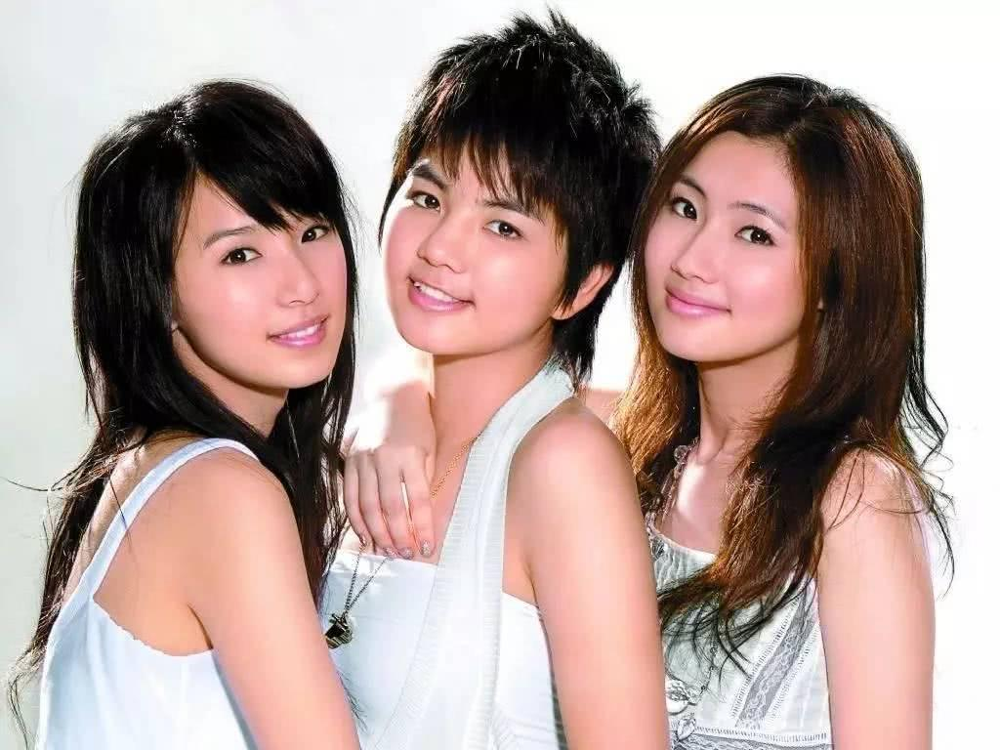
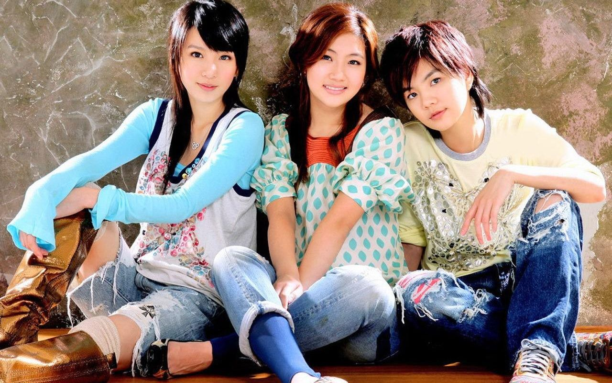
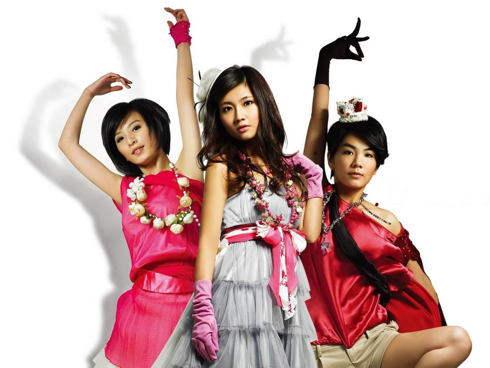

S.H.E
S.H.E，为台湾女子演唱团体，其团名取自三位成员英文名字的首个字母，是由Selina（任家萱）、Hebe（田馥甄）和Ella（陈嘉桦）三位成员组成。三人于2001年9月11日正式出道，发行首张专辑《女生宿舍》。
S.H.E自出道至今，专辑总销售量在全球累积将近2000万张。
她们是台湾甚至华人世界最长寿及唱片销售量最高的女子团体，也是现今亚洲五大畅销与全球十大畅销女子演唱组合之一。
出道历程
2000年，三人各自参加由宇宙唱片（为华研唱片前身）与中视节目《电视大国民》残酷舞台单元合办的《宇宙2000实力美少女争霸战》选秀比赛。
决赛共六位参加，最后Selina获得冠军，Hebe进入决赛，Ella则在决赛时被淘汰，原先计划只选冠军，赛后唱片公司再找回七名参赛者试音，在经过唱片公司内部协商讨论之后，决定签下现在S.H.E的三位成员并组成团体。
S.H.E正式组团后，而当时仍就读大学的Selina、高中的Hebe和五专的Ella，利用假日空档北上台北进行录音和受训，之后Hebe和Ella毕业后不久之后S.H.E就即将出道，而S.H.E三人住在宿舍一起共同生活、工作、上通告和唱片宣传。
演艺历程
2001年至2006年
- 《女生宿舍》、《青春株式会社》、《美丽新世界》时期
-
第1张专辑《女生宿舍》（首张录音室专辑）于2001年9月11日发行,主打歌《恋人未满》令三人一炮而红。
-
《Together新歌+精选》、《Super
Star》、《奇幻旅程》、《奇幻乐园大型巡演》、《Encore！》时期
-
2003年，唱片公司声言S.H.E将进入一个全新的阶段，第4张专辑《Together新歌+精选》便为告别旧形象之作，专辑于2003年1月23日发行。
- 《不想长大》、《Forever新歌+精选》、《移动城堡大型巡演》时期
-
2005年11月25日，发行第8张专辑《不想长大》，S.H.E连续五年入围台湾金曲奖，并获得2003年度第14届金曲奖的最佳重唱组合奖。该专辑亦被“中华音乐人交流协会”选为2005年推荐专辑。
2007年至2010年
- 《Play》、《我的电台FM S.H.E》时期
-
2007年5月11日，发行第10张专辑《Play》，此张专辑如同专辑名称一样，是以“玩”、“玩乐”的概念为出发点制作而成的专辑，在首波主打歌《中国话》首次挑战绕口令，并融合电子、舞曲、嘻哈和Rap元素。
- 《爱的地图》、《爱而为一大型巡演》、《SHERO》时期
-
2009年6月22日发行首张数位专辑《爱的地图》，同年10月16日、10月17日，展开第三次的世界巡回演唱会《爱而为一世界巡回演唱会》。2010年3月26日，发行第12张专辑《SHERO》。
2011年至2014年
- 《花又开好了》时期
-
2012年6月23日，担任第23届金曲奖演出嘉宾宣告回归。2012年11月16日，发行第13张专辑《花又开好了》。
- 《2gether 4ever大型巡演》、《2gether 4ever大型巡演 Encore》时期
-
2013年受中央电视台之邀二度于《中国中央电视台春节联欢晚会》合体演出，演唱《SHERO》。6月举行《TogetherForever世界巡回演唱会》。
2015年至2020年
- 《永远都在》时期
-
2016年5月23日，推出合体新单曲《殊途》，8月10日，推出纪念S.H.E成军15周年的合体新单曲〈永远都在〉，此单曲〈永远都在〉融入了S.H.E历年来的歌名与歌词。
- 三人分别成立个人公司，确立单飞不解散
-
2018年9月30日，华研音乐宣布与S.H.E三人合约正式到期。三人各自成立新公司。Selina成立了“任真美好有限公司”、Hebe成立“乐来乐好有限公司”、Ella成立“劲桦娱乐有限公司”。
音乐作品
- 《女生宿舍》（2001年）
- 《青春株式会社》（2002年）
- 《美丽新世界》（2002年）
- 《Super Star》（2003年）
- 《奇幻旅程》（2004年）
- 《Encore》（2004年）
- 《不想长大》（2005年）
- 《Play》（2007年）
- 《我的电台 FM S.H.E》（2008年）
- 《SHERO》（2010年）
- 《花又开好了》（2012年）
获奖经历
- S.H.E迄今共入围过6次台湾金曲奖，并获得1座最佳重唱组合奖
- 获得8次IFPI香港唱片销量大奖
- 4次KKBOX数字音乐风云榜
- 7次HITO流行音乐奖
- 2次全球流行音乐金榜
- 一共总计荣获超过200多项各种荣誉和奖项
金曲奖
| 年份 |
奖项 |
作品 |
结果 |
| 2002年 |
最佳新人奖 |
《女生宿舍》 |
入围 |
| 2003年 |
最佳重唱组合奖 |
《美丽新世界》 |
获奖 |
| 2004年 |
最佳重唱组合奖 |
《Super Star》 |
入围 |
| 2005年 |
最佳重唱组合奖 |
《奇幻旅程》 |
入围 |
| 2006年 |
最佳演唱组合奖 |
《不想长大》 |
入围 |
| 2007年 |
票选最受欢迎女歌手 |
不适用 |
提名 第二名 |
| 2011年 |
最佳演唱组合奖 |
《SHERO》 |
入围 |
| 2019年 |
年度歌曲奖 |
〈十七〉 |
入围 |
宣传照


